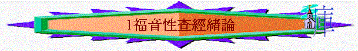

1.定義
A.本於聖經
a.從聖經起----傳講耶穌
「 腓利就開口從這經上起，對他傳講耶穌。」徒8:35
b.本著聖經----與人辯論
「 保羅照他素常的規矩進去，一連三個安息日，本著聖經與他們辯論，」徒17:2
c.引用聖經----證明基督
「 在眾人面前極有能力駁倒猶太人，引聖經證明耶穌是基督。」徒18:28
d. 考查聖經----分辨真偽
「 這地方的人賢於帖撒羅尼迦的人，甘心領受這道，天天考查聖經，要曉得這道是與不是。」徒17:11
B.福音為主
∼查考經文主要是福音的內容
a.關乎神的國
「 說：「日期滿了， 神的國近了。你們當悔改，信福音！」」可1:15
b.關乎因信稱義
「 因為 神的義正在這福音上顯明出來；這義是本於信，以至於信。如經上所記：「義人必因信得生。」」羅1:17
c.關乎耶穌基督
「 這福音是 神從前藉眾先知在聖經上所應許的， 論到他兒子─我主耶穌基督。按肉體說，是從大衛後裔生的；」羅1:2-3
d.關乎永生獨一的神
「諸君，為甚麼做這事呢？我們也是人，性情和你們一樣。我們傳福音給你們，是叫你們離棄這些虛妄，歸向那創造天、地、海，和其中萬物的永生 神。」徒14:15
e.關乎得救
「 你們既聽見真理的道，就是那叫你們得救的福音，也信了基督，既然信他，就受了所應許的聖靈為印記。」弗1:13
f.關乎復活
「 按聖善的靈說，因從死�奡_活，以大能顯明是 神的兒子。」羅1:4
g.關乎永恆
「 我又看見另有一位天使飛在空中，有永遠的福音要傳給住在地上的人，就是各國、各族、各方、各民。」啟14:6
h.關乎悔改
「 說：「日期滿了， 神的國近了。你們當悔改，信福音！」」可1:15
i.關乎應許
「 這奧祕就是外邦人在基督耶穌�堙A藉著福音，得以同為後嗣，同為一體，同蒙應許。」弗3:6
j.關乎和平
「神藉著耶穌基督（他是萬有的主）傳和平的福音，將這道賜給以色列人。」徒10:36
k.關乎審判
「 因為時候到了，審判要從 神的家起首。若是先從我們起首，那不信從 神福音的人將有何等的結局呢？」彼前4:17
C.一同查考
a.細察探究
「 你們查考聖經（或譯：應當查考聖經），因你們以為內中有永生；給我作見證的就是這經。」約5:39
∼查考的原文ereunao有細察、搜尋及查考探究意思
b.仔細檢驗
「 這地方的人賢於帖撒羅尼迦的人，甘心領受這道，天天考查聖經，要曉得這道是與不是。」徒17:11
「治民的官府和長老啊，倘若今日因為在殘疾人身上所行的善事查問我們他是怎麼得了痊癒，」徒4:9
∼考查的原文是anakrino有仔細質問及檢驗意思
c.作出判斷
「 我被你們論斷，或被別人論斷，我都以為極小的事；連我自己也不論斷自己。 我雖不覺得自己有錯，卻也不能因此得以稱義；但判斷我的乃是主。」林前4:3-4
∼anakrino有判斷及審明意思
d.求問研究
「 以斯拉定志考究遵行耶和華的律法，又將律例典章教訓以色列人。」拉7:10
∼考究的希伯來文daw-rash，有求問、詢問，研究的意思
2.價值
A.分辨真偽
「 這地方的人賢於帖撒羅尼迦的人，甘心領受這道，天天考查聖經，要曉得這道是與不是。」徒17:11
B.得著永生
「你們查考聖經（或譯：應當查考聖經），因你們以為內中有永生；給我作見證的就是這經。」約5:39
3.好處
A.經過自已的判斷→更堅定相信
B.經過自已的研究→更深刻記得
C.經過自已的提問→更熄除疑惑
D.經過自已的討論→更多客觀性
E.經過實際的應用→更切身處地
4.注意(組長帶福音性查經留意地方)
A.認清角式
∼你像一個設計野外動向工作員，預先設計內容，提供指引，引導參與者一步一步尋得目標，至終完成活動
∼福音性查經組長就是:預先預備查經資料及問題à引導組員留意經文→思考意思→提出疑問→發現真理→接受救恩
B.要有信心
「神的道是活潑的，是有功效的，比一切兩刃的劍更快，甚至魂與靈，骨節與骨髓，都能刺入、剖開，連心中的思念和主意都能辨明。」來4:12
「 因為我們的福音傳到你們那�堙A不獨在乎言語，也在乎權能和聖靈，並充足的信心。正如你們知道，我們在你們那�堙A為你們的緣故是怎樣為人。」帖前1:5
∼信神的話是活潑、有果效、常存的
∼信主與我們同工
∼信聖靈的工作
C.本於聖經
「 保羅照他素常的規矩進去，一連三個安息日，本著聖經與他們辯論，」徒17:2
D.要有裝備
「有一個猶太人，名叫亞波羅，來到以弗所。他生在亞力山大，是有學問（或作：口才）的，最能講解聖經。」徒18:24
「你當竭力在神面前得蒙喜悅，作無愧的工人，按著正意分解真理的道。」提後 2:15
a.對聖經熟悉
∼熟悉的程度是想起一個福音真理題目，就即時聯想起超過多段的經文，大概知道它的出處
∼對一些普遍性的福音難題也有一定的認識
b.按正意分解
(1)以「文字」解經
∼文字最易、最直接顯伸的意思，通常就是該節的意思，不要想得太「刁鑽」
(2)以「前後經卷脈胳」解經
∼其中一種最理想的解經方法是看完一卷經卷，用該卷意思，解釋該卷的某節，是最理想的!
(3)以「當時的背景」解經
∼通常該卷經文內容已交待背景，嘗試不要懶惰，仔細查考。
(4)以「其它經文」解經
∼試試留意該處的其它經文，有沒有出現同樣真理
c.對羊群認識
「我是好牧人；我認識我的羊，我的羊也認識我。」約10:14
∼帶領福音性查經聚會，牽涉生活應用，若知道不同年齡的新朋友，他們普遍面對什麼事，有什麼需要，他們有什麼興趣的話題，就更能將經文及福音應用在他們生活中
d.曉活用資源
∼適當運用教材、參考書、福音工具書，是可以幫助預備查經
∼但有時限於時間、對象及其他原因，組長要靈活運用教材，加以修改、補充、刪減
∼但理想的查經預備，是先自己按正意，按聖靈感動直接看聖經，多讀幾次，不明白或事後才看參考書作為補允，這樣所帶的內容由於經過思想與感動，帶出來會更有力的！
E.要有技巧
∼帶小組技巧
∼面對不同福音對象的技巧
∼面對福音難題技巧
∼建立關係技巧
∼呼召技巧
∼活用教材技巧
∼引用例子例證比喻技巧
∼作為輔助員／組員技巧
5.教材
∼教會常用的教材
＊一針見血的福音，蘇穎智牧師著，恩福製作中心
＊福音研經課程，李錦彬牧師著，滙美傳意出版
＊福音性研經 ，蘇穎睿及蘇劉君玉著，2010年新修訂版二刷
＊活出所信，陳麗群等著，證主
＊教會傳道部資料：
(1)那一位是真神--關乎真神
(2)人的有限--關乎智慧
(3)非一般的冊子--關乎審判
(4)豐盛生命何處尋--關乎生命
(5)快樂的秘訣--關乎生活
(6)聖誕快樂--關乎主降生
(7)萬世巨星--關乎基督
(8)尋找真愛--關乎真愛
(9)不朽傳奇--關乎復活
(10)唯一方法--關乎相信
(11)奇妙改變--關乎果效
A.細閱經文
B.掌握主題(今次查考的方向)
∼今次查考的福音性重點是甚麼？是罪、悔改、復活……
∼另外，今次查完後，想組員認識甚麼真理？想他們有甚麼行動？
C.留意脈胳
D.認清內容
a.引言內容：一些引發動機的問題／活動
b.真理問題：一些問題帶入他們明白及融入某一點真理中
c.應用內容：一些問題／活動將真理融入實際生活中，也在生活中應用真理
d.連貫問題：一些問題連入第二點真理，令整個查經內容更連貫
e.總結問題：讓組員記得所查的內容及清楚福音真理的重點的話語／問題
f.呼召問題：一些問題及說話是鼓勵新朋友接受救恩
堂課：
1那一位是真神----關乎真神
經文:徒17:16,22-31
如果世界上真有神,你想這位神外貌,特徵,性格應是怎樣的? or
活動:試畫出你心目中神的形象/你曾經見過一些神的像(若不能畫出可講出來)
∼我們看看聖經怎樣描繪這位偉大的真神
一.世人的看法(v.22-23,29)
1.當時的雅典人對神有甚麼看法? 用甚麼去製造神?
2.你認為他們迷信嗎? 何以見得?
*究竟真正的神應是怎樣的?
二.真神的描述
1.祂是創造天地萬物的神(v.24-25)
a. v.24題到這位神有甚麼特別的地方? 世上有沒有任何一件物件,東西,不是祂造的? 何以見得?
b.有沒有見過一些好美麗,令你讚嘆的風景? 當時你聯想到甚麼?
c.這偉大的天地會否胡亂巧合出現? 何以見得?
d.如果神真是創造主,祂會否有缺乏的?需不需要人一定的供奉? 聖經怎樣說?
2.祂是實在可以尋求的神(v.27)
a.今日我們見不見到神? 為甚麼?(約4:24)
b.祂在那��?我們可否尋求神?
c.你在讀書或工作中,有否祈禱尋求神? 試分享(基督徒可分享祈禱尋求神的實在)
3.祂是公義審判天下的神(v.30-31)
a. v.31題到神在所定的日子,會作甚麼?
b. v.31題到「公義」若果一對父母單有慈愛,沒有公義,會有甚麼後果? 你/你家中的父母在你不聽話時,會怎做?
c.神為何要審判天下,人犯了甚麼錯?(v.29-30)
d.如果神要審判你與我,你認為神會對我們有甚麼「裁決」?
三.歸回的轉機
1.人在神快要審判下,有否轉機,可以作甚麼? (v.30) 何謂「悔改」?
2.v.27又題到我們可以怎樣? 何謂「尋求」? 怎「尋求」?
3.所以在今次查經中,我們認識神是怎樣的?
4.你願意今天尋求(祈禱)祂,向祂悔改嗎?
A.細閱經文:徒17:16,22-31
B.掌握主題
∼今次查考的福音性重點是甚麼？
∼今次查完後，想組員認識甚麼真理？想他們有甚麼行動？
C.留意脈胳： à à à__________________
D.認清內容
a.引言內容：
b.真理問題：
c.應用內容：
d.連貫問題：
e.總結問題：
f.呼召問題：